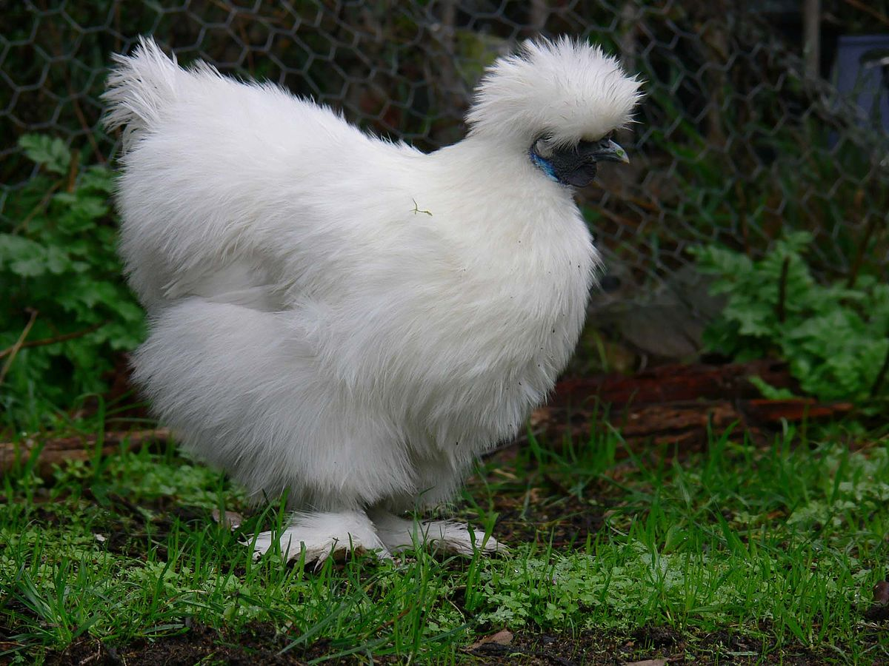

The scientific name for a chicken is Gallus gallus domesticus. Male chickens are called roosters, female chickens are called hens, and babies are called chicks.
2. A study done in 2003 estimated that there were over 24 billion chickens in the world. Not only do chickens outnumber people more than 3 to 1, but there are more chickens than any other kind of bird in the world.
Chickens are omnivores, which mean they eat both plants and meat. In the wild, they’ve been known to feast on seeds, insects, and even larger animals like lizards and wild mice. Domesticated chickens usually eat corn meal, seeds, and wild grasses.
Domesticated chickens generally do not fly, though they may travel a short distance by air if they perceive danger, or to get over a fence or into a bush.
Chickens are very social and congregate together in a flock. They form what is called a “pecking order,” and give priority to dominant birds in terms of food access and nesting locations. Adding or taking away a hen or a rooster from a flock can cause great stress to all the birds, resulting in fights and injuries until a new pecking order is established. 
Types of chickens
The chicken, Gallus gallus domesticus, is a domestic subspecies of the red junglefowl, a member of the pheasant family that is native to Asia. Genetic studies have found that the grey junglefowl also contributed to the chicken's evolution.
According to the Encyclopædia Britannica, "Humans first domesticated chickens of Indian origin for the purpose of cockfighting in Asia, Africa, and Europe. Very little formal attention was given to egg or meat production..."
We've already said there are more than 25 billion chickens in the world. This makes the chicken more numerous than any other bird on the planet.
The United States alone consumes 8 billion chickens a year, and around 250 eggs per capita.
There are approximately 280 million laying hens producing 50 billion eggs in the U.S. each year.
Adult male chickens over a year old are called roosters in Australia, Canada, and the U.S., but are called cocks in the U.K. Males less than a year old are called cockerels, and castrated males are called capons. Adult females are hens, and young females less than a year old are called pullets, although in the egg-laying industry, a pullet becomes a hen when she begins to lay eggs. Young chickens are called chicks.
Chickens begin communicating before they are hatched, when the mother hen makes a purring noise towards her eggs and the chicks peep back at her from inside the unhatched eggs.
There are approximately 30 distinct vocalizations that chickens use to communicate with each other.
Chickens are omnivores, meaning they eat seeds and insects, but also have been known to eat mice and lizards.